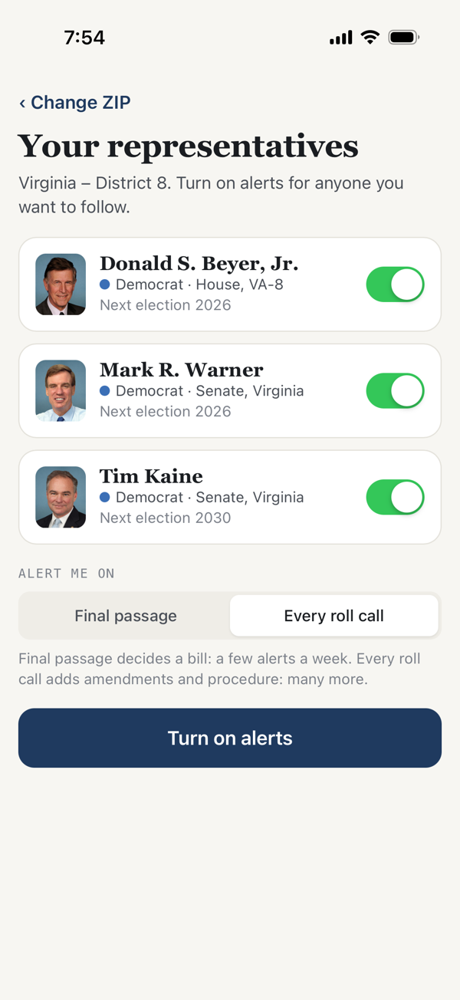
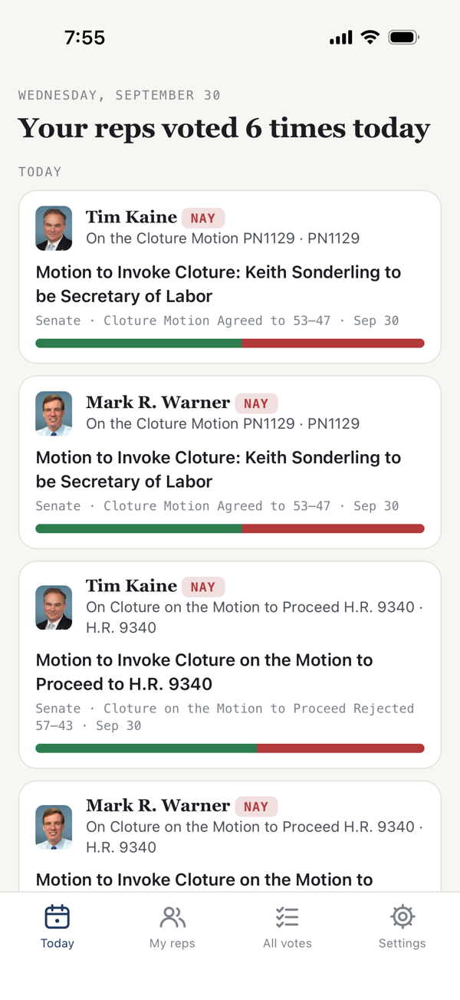
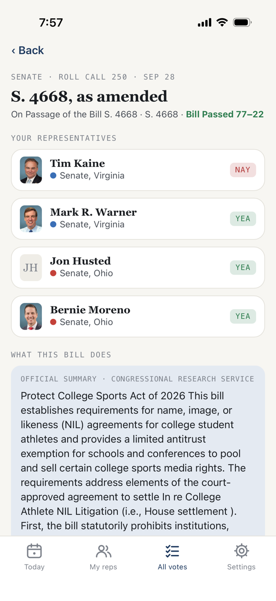

Enter your ZIP code. Follow your representative and senators. Get a notification, with a plain-English official summary, every time they vote.
Free. No account. No tracking. Made by John Hubert LLC.
Three steps, under a minute.
The app looks up your congressional district from a table on the phone and shows your representative and both senators. The ZIP never leaves your device.
Flip the switch next to a member. Choose "Final passage" for the votes that decide a bill, or "Every roll call" to include amendments and procedure.
Within minutes of a recorded vote: how they voted, the result, and a one-line summary from the Congressional Research Service. Tap through for every member's position.



iPhone app
The iPhone app is with Apple for review. When it's approved, the App Store link will appear here. Until then, the web version has everything except notifications, and it works on any phone: open it in Safari or Chrome and add it to your home screen.
Questions: support@johnhubert.llc · Privacy policy
Yes. There are no ads and nothing to buy. If you'd like to support the work, there will be a way to leave a tip in a future version.
No. Open Chambers shows the record and nothing else. The one measure of ideology it shows, DW-NOMINATE, is a published academic method and is displayed exactly as its authors publish it, with a link to how it's calculated.
By default the app sends alerts for final-passage votes only, because most Senate days consist of procedural votes and nominations. Switch to "Every roll call" in Settings if you want all of them.
Not yet. The web version works on Android and can be added to the home screen; an Android app is planned.